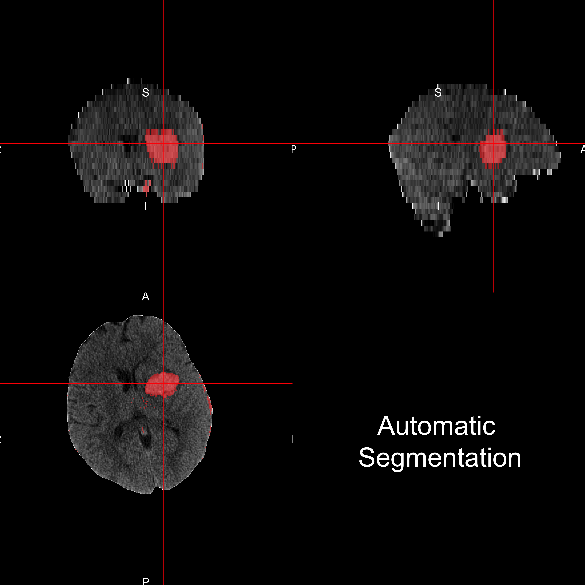

- Minimally Invasive Surgery plus r-tPA for Intracerebral Hemorrhage Evacuation (MISTIE)
- Multi-center, multi-national Phase II clinical trial
- MISTIE III ongoing

PI: Dr. Dan Hanley 

PI: Dr. Dan Hanley



Multiple pieces of software used

 Neuroconductor:
Neuroconductor: